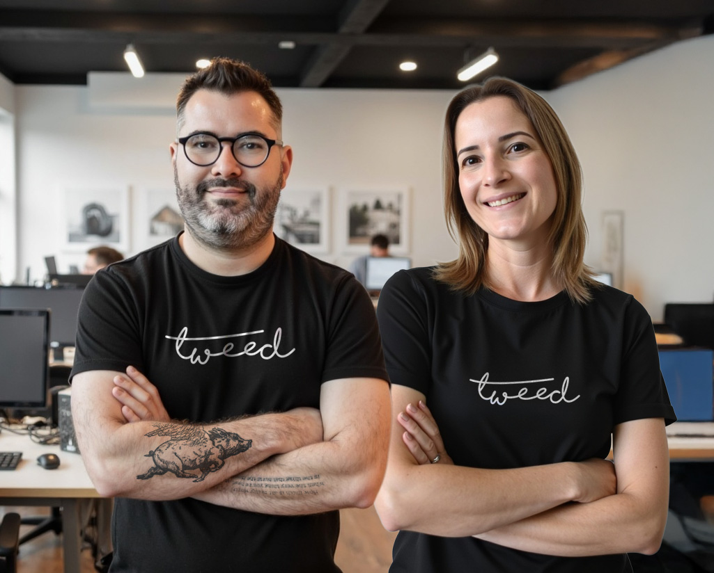

É a distância entre o que a sua empresa realmente é e a forma como o mercado
percebe ela. Essa distância tem sintomas conhecidos.
O atendimento é sério. O site parece antigo.
A primeira impressão da sua empresa não é a reunião — é a página que abre
antes dela. Quando o digital atrasa, a conversa começa em desvantagem.
O produto é excelente. A identidade não sustenta o preço.
Design não é enfeite: é a primeira camada de confiança. Marca mal apresentada
gera dúvida, e dúvida é desconto pedido antes mesmo da proposta.
Cada canal fala uma língua diferente.
Site de um jeito, redes de outro, apresentação comercial de um terceiro.
Não falta material — falta uma direção que junte tudo.
A marca ficou menor que o negócio.
É essa a dor que a Tweed resolve — e ela é maior do que marketing. Não se trata de
produzir mais peças, mas de alinhar o que a empresa entrega com o que o mercado
enxerga. Quando essas camadas se encaixam, vender fica mais fácil, e explicar-se
fica desnecessário.
02
Capítulo 02 · A convicção
Somos contra o marketing que ocupa espaço.
E a favor da comunicação que constrói percepção, confiança e venda.
O inimigo tem nome: marketing sem direção
Post por postar. Identidade visual sem estratégia. Campanha que gera lead e
não conversa com vendas. Agência que entrega tarefa, mas não assume pensamento.
Fornecedor que responde briefing, mas não entende o negócio.
O que fazemos no lugar disso
Pensamos antes de criar, criamos antes de publicar, executamos antes de
justificar e acompanhamos antes que você precise cobrar. É menos ruído,
não mais tarefa na sua mesa.
Marcas não crescem por barulho.
Crescem por clareza, consistência e confiança.
03
Capítulo 03 · O método
Presença com Propósito
Seis etapas que transformam uma lista de entregas em uma construção de marca.
Nenhuma delas começa pelo layout.
01
Diagnóstico de percepção
Antes de criar qualquer coisa, entendemos o negócio: o que a empresa é, o que promete, como aparece hoje e onde o valor real se perde no caminho.
02
Definição de posicionamento
Para quem a marca fala, o que precisa provar e o que o cliente precisa sentir antes de comprar. É aqui que a comunicação ganha direção.
03
Construção da identidade e da linguagem
Sistema visual e verbal com acabamento: marca, tipografia, cor, imagem e tom de voz que sustentam preço em vez de pedir desculpas por ele.
04
Organização dos canais
Site, redes, materiais institucionais, apresentação comercial e campanhas passam a falar a mesma língua — com padrão definido, não improvisado.
05
Execução integrada
Uma equipe só, um interlocutor só. Você deixa de reger uma orquestra de fornecedores desafinados e passa a acompanhar um plano que anda sozinho.
06
Otimização contínua
O que funciona, se aprofunda. O que não funciona, sai. Marca é construção — e construção pede acompanhamento, não relatório para arquivar.
Marketing completo com visão de dono, acabamento de designer e execução de quem
resolve. Cinco pilares sustentam tudo o que entregamos.
1
Estratégia antes da estética
Começamos pela intenção, não pelo layout. Estratégia sem forma não aparece; forma sem estratégia não sustenta.
2
Design como percepção de valor
Uma marca bem apresentada reduz dúvida, aumenta autoridade e permite cobrar o que o trabalho vale.
3
Presença integrada
Marca, site, redes, campanha, foto, vídeo, apresentação e automação conversando entre si — sob uma direção única.
4
Atendimento direto, com visão de dono
Você fala com quem pensa, quem decide e quem acompanha a entrega. Sem camadas, sem telefone sem fio.
5
Velocidade com direção
Entregamos rápido porque temos repertório, método e envolvimento direto. Agilidade aqui é maturidade operacional, não pressa.
Dentro do full-service
Posicionamento de marca
Identidade visual
Naming e tom de voz
Websites e landing pages
Redes sociais
Campanhas e mídia paga
Conteúdo e copy
Fotografia e vídeo
Motion e ilustração
Modelagem 3D
IA generativa aplicada
RD Station e automação
Materiais institucionais
Apresentações comerciais
Posicionamento de marca
Identidade visual
Naming e tom de voz
Websites e landing pages
Redes sociais
Campanhas e mídia paga
Conteúdo e copy
Fotografia e vídeo
Motion e ilustração
Modelagem 3D
IA generativa aplicada
RD Station e automação
Materiais institucionais
Apresentações comerciais
Posicionamento de marca
Identidade visual
Naming e tom de voz
Websites e landing pages
Redes sociais
Campanhas e mídia paga
Conteúdo e copy
Fotografia e vídeo
Motion e ilustração
Modelagem 3D
IA generativa aplicada
RD Station e automação
Materiais institucionais
Apresentações comerciais
Posicionamento de marca
Identidade visual
Naming e tom de voz
Websites e landing pages
Redes sociais
Campanhas e mídia paga
Conteúdo e copy
Fotografia e vídeo
Motion e ilustração
Modelagem 3D
IA generativa aplicada
RD Station e automação
Materiais institucionais
Apresentações comerciais
05
Capítulo 05 · A prova
Repertório não se improvisa.
2017
Ano de fundação da Tweed
500+
Marcas atendidas ao longo da trajetória
30
Anos de prática criativa acumulada
Algumas das marcas que já passaram pela nossa mesa
06
Capítulo 06 · Quem já trabalhou com a gente
O que dizem depois de trabalhar conosco.
Nenhum destes textos foi pedido com roteiro. São recados que chegaram
depois da entrega — que é quando a opinião de um cliente vale alguma coisa.
A Tweed consegue soluções criativas muito inéditas. Isso posiciona minhas
marcas com destaque e impacto. Recomendo fortemente!
Mais do que uma agência que entrega o combinado, encontramos um verdadeiro
parceiro estratégico: um time sério, ágil e comprometido com os nossos
resultados. A Tweed entende o que existe por trás de cada demanda e faz
acontecer, mesmo diante de urgências. Não foram poucas as vezes em que fomos
atendidos em horários nada convencionais, até mesmo às 5 da manhã. Felipe,
obrigado por liderar uma cultura em que parceria não é cláusula de contrato,
e sim postura. Contar com vocês é um privilégio!
Uma agência comprometida, com profissionais qualificados para atuar de
forma estratégica e prática, com foco na experiência do cliente e no
fortalecimento da marca. A participação da Tweed, nos projetos do Santuário
Cristo Redentor, contribuiu com estratégias que uniram relacionamento,
inovação e resultados concretos.
Sensacional!!! Eles são maravilhosos, competentes e muito criativos!
Recomendo 100%.
São tantos diferenciais que fica difícil elencar os principais, mas já
trabalhamos há alguns meses com a agência e ficamos encantadas desde o
primeiro contato com o Felipe. Atendimento humanizado, personalizado e a
agência atende a todos os requisitos de qualidade no serviço, entrega e
suporte. Agradecemos demais por criarem e cuidarem do site da nossa empresa!
Muito boa experiência. Profissionais talentosos. Atendimento atencioso.
São responsáveis pela criação de nosso site com design excelente.
Gostamos muito do site da Ocre Galeria! Desde o início, sentimos que nossas
ideias e necessidades foram bem compreendidas, o que fez toda a diferença
no resultado final. O site ficou bonito, funcional e fácil de atualizar,
exatamente como imaginamos. Atende muito bem ao que buscamos como galeria.
Agradecemos pelo trabalho e seguimos com confiança nessa parceria.
A agência está sendo fundamental neste nosso momento. Não é fácil encontrar
hoje em dia tanta atenção e soluções apresentadas, podemos cuidar do negócio
com tranquilidade que a Tweed trata do nosso combustível.
Agência incrível! Equipe extremamente comprometida, entrega criativa de
altíssima qualidade e sempre com muita atenção aos detalhes. Profissionais
dedicados e focados em oferecer os melhores resultados. Super recomendo!
Fazem 4 anos que eles são responsáveis pelo nosso site e nos ajudam com as
criações gráficas. Super recomendo!
Recomendo o serviço da Agência Tweed, pois o atendimento é ágil e de muita
competência, com ideias inovadoras para acelerar o sucesso do seu negócio.
Contamos com o atendimento da Agência Tweed há muitos anos, e o serviço
sempre foi rápido e de muita qualidade!
07
Capítulo 07 · Quem está do outro lado

Somos pequenos por escolha. Próximos por método. Completos por visão.
A Tweed é uma agência boutique full-service fundada em 2017, em Porto Alegre, por
Felipe Rijo e Cintia Groenwald. Trabalhamos com empresas em fase de crescimento,
profissionalização ou reposicionamento — companhias que já têm produto, reputação
e potencial, mas cuja comunicação ainda não traduz esse valor.
Estrutura enxuta aqui não é limitação: é o que permite envolvimento direto da
liderança em cada projeto, decisão rápida e um padrão de acabamento que agência
grande terceiriza e freelancer não consegue sustentar sozinho.
Mais próxima que uma grande agência. Mais completa que um freelancer.
Mais estratégica que uma agência de posts.
Felipe Rijo & Cintia Groenwald — sócios-fundadores
08
Capítulo 08 · Honestidade comercial
Talvez a Tweed não seja para você.
Preferimos dizer isso agora do que descobrir junto no terceiro mês de contrato.
Não somos a opção de quem está procurando o menor preço do mercado.
Nosso trabalho envolve pensamento estratégico, acompanhamento próximo e um padrão de execução que não foi construído para competir por centavos. Preferimos que o investimento faça sentido pelo valor que entrega.
Não trabalhamos com quem mede marketing por quantidade de peças entregues.
Mais não significa necessariamente melhor. Uma peça certa, no momento certo, pode valer muito mais do que vinte produzidas apenas para cumprir calendário. Nosso critério é impacto, coerência e propósito.
Não funcionamos bem com quem quer terceirizar a marca inteira sem participar da construção.
Podemos assumir grande parte da estratégia e da execução, mas as melhores marcas são construídas em parceria. Precisamos conhecer o negócio, ouvir quem vive a empresa e ter acesso às decisões que fazem a marca ser o que ela é.
Não vendemos fórmula pronta, pacote fechado nem promessa de resultado garantido.
Cada empresa chega com um contexto, um momento e um problema diferente. Por isso, preferimos entender antes de prescrever e construir uma solução que faça sentido para aquela realidade, em vez de encaixar negócios diferentes na mesma receita.
Mas somos a parceira certa para empresas que buscam direção, consistência e
presença de marca com padrão elevado — e que preferem construir a improvisar.
Sua marca é melhor do que a forma como ela aparece?
Comece por uma conversa. A gente escuta o momento da empresa, aponta o que está
travando a percepção e mostra o caminho — com método, prazo e escopo no papel.